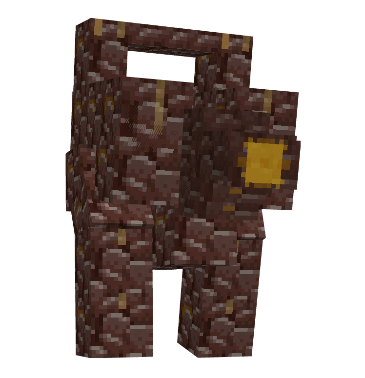

Les Boss
Le serveur regorge de boss, du défi accessible au cauchemar de fin de jeu. Voici qui ils sont et un ordre de progression conseillé.
🧭 Classement par puissance
Les boss sont classés du moins au plus coriace (selon leurs points de vie). Les mobs de Minecraft ouvrent la marche ; ceux qui se régénèrent ou ont plusieurs phases sont placés plus bas. Tout en bas, le grand final : le Tormentor. Rien n'est imposé — prépare ton équipement avant chaque palier.
Boss de base (Minecraft)
Wither›

Invocation hostile et explosive, le Wither est un crâne flottant à trois têtes que les joueurs déclenchent eux-mêmes. Forme un T avec 4 blocs de soul sand puis dépose 3 crânes de wither skeleton au sommet : à l'apparition, il se gonfle d'énergie et libère une déflagration qui pulvérise le décor — invoque-le donc à l'écart de tes coffres. En combat, il bombarde de têtes explosives et se soigne en touchant : les flèches et le tir restent efficaces de loin, l'épée pour la fin. Sa récompense, la Nether Star, est la clé des balises (beacons).
Ender Dragon›

Gardienne de l'End et boss final du jeu vanilla, elle ouvre tout le contenu end-game du pack. Rejoins sa dimension via un portail activé avec des Yeux de l'Ender, puis commence par détruire les cristaux perchés au sommet des piliers d'obsidienne : tant qu'ils brillent, ils la régénèrent en continu. Une fois les cristaux tombés, vise ses passages en piqué et frappe sa tête. La tuer libère l'œuf, la passerelle vers les cités de l'End et les elytras.
Warden›

Aveugle mais titanesque, le Warden ne voit pas — il sent. Il émerge des Ancient Cities du Deep Dark dès que tu déclenches trop de sculk shriekers, et te localise au moindre bruit ou mouvement. Ses coups tuent même en armure de netherite et son cri sonique traverse les murs : l'objectif est presque toujours de l'éviter en se déplaçant accroupi et en lançant des projectiles pour le distraire. Ce que renferme sa cité ouvre la voie vers la dimension Deeper and Darker.
Boss à invoquer (style Terraria)
Chacun se convoque avec un objet à fabriquer (recettes dans JEI) et lâche un loot unique.
Swampjaw›

Croisement de crocodile et de chauve-souris, le Swampjaw est pensé comme ton tout premier boss à invoquer. Fabrique son objet d'invocation et utilise-le dans un espace dégagé. Il alterne morsures rapides et plongeons aériens, sans réelle difficulté si tu gardes de la mobilité. Son butin te fournit un bon socle d'équipement pour aborder les boss suivants.
Bellringer›

Moine spectral au visage masqué, le Bellringer fait léviter et sonner des cloches fantômes autour de lui. Convoque-le avec son objet craftable : il téléporte ses cloches et frappe par ondes sonores. Reste mobile pour éviter ses zones et détruis les cloches qui le protègent. En récompense, il lâche des objets utilitaires, dont de quoi traverser les murs.
Dame Fortuna›

Joueuse fantôme obsédée par le hasard, Dame Fortuna transforme le combat en roulette truquée. Invoque-la avec son objet dédié : ses attaques dépendent de tirages aléatoires, entre bénédictions et malédictions. Adapte-toi à chaque « tour » et punis-la entre deux mises. Son loot tourne autour de la chance — accessoires et armes thématiques.
Rosalyne›

Lame du crépuscule et combattante la plus redoutable du mod, Rosalyne ne pardonne aucune erreur. N'invoque son objet que bien équipé : elle enchaîne combos rapides, dashes et frappes à distance. Lis ses postures pour esquiver puis riposte dans les ouvertures. Elle laisse des armes offensives puissantes et des curios de haut niveau.
Gardiens élémentaires
Ferrous Wroughtnaut›

Colosse de fer endormi depuis des siècles dans sa chambre souterraine, il brandit une hache plus grande que toi. Il s'éveille dès que tu approches ou le frappes, puis enchaîne coups lourds et charges : tourne autour de lui et frappe juste après ses attaques, jamais de face. Bien chronométré, le combat devient un pur duel de timing. C'est l'un des meilleurs premiers vrais défis du pack.
Frostmaw›

Yéti géant qui hiberne au sommet des montagnes enneigées, gardien d'un coffre gelé. Provoque-le (en le frappant ou en touchant son butin) pour déclencher l'affrontement : il charge, balaie de ses griffes et crache du givre. Esquive ses ruades et frappe ses flancs entre deux assauts. Vaincu, il offre un trophée glacial et de bonnes ressources.
Barako, the Sun Chief›

Chef tribal trônant dans les savanes, Barako canalise la fureur du soleil. Pénètre son aire pour l'affronter : il fait pleuvoir des rayons solaires, te repousse d'ondes de choc et appelle des sbires. Brise ses gardes, esquive les zones brûlantes au sol et frappe quand il récupère. Son masque solaire très convoité est la récompense.
Lord Pumpkinhead
Lord Pumpkinhead›

Seigneur à tête de citrouille, c'est la figure d'Halloween cauchemardesque de Born in Chaos. Il rôde dans le monde, surtout la nuit, souvent escorté de morts-vivants à son service. En combat il alterne charges, coups de faux et invocations de sbires pour te submerger. Reste mobile, élimine ses serviteurs puis concentre-toi sur lui ; son butin a une saveur macabre bien à lui.
Élites de Minecraft Dungeons
Endersent›

Version titanesque et corrompue de l'Enderman tirée de Minecraft Dungeons, il dépasse de loin son cousin vanilla. Il apparaît dans le monde, se téléporte sans cesse derrière toi et frappe pour des dégâts énormes capables d'entamer la meilleure armure. Garde des blocs ou des murs pour casser sa ligne de vue, et frappe juste après ses téléportations. Un adversaire nerveux qui punit la moindre seconde d'inattention.
Redstone Golem›

Brute de pierre animée par la redstone, c'est un mini-boss souterrain venu de Minecraft Dungeons. Lent mais massif, il martèle le sol et sème des mines qui explosent à retardement. Garde tes distances, esquive les zones minées et frappe entre ses coups lourds. Idéal pour tester ton équipement de milieu de partie.
Progression imposée
À vaincre dans l'ordre : chaque boss débloque la zone et le boss suivants.
Naga›

Immense serpent vert, le Naga garde le seuil de toute la progression du Twilight Forest. Affronte-le dans sa Naga Courtyard : il fonce en ligne droite et brise les murets, alors sers-toi des piliers pour couper ses charges et le frapper de flanc. Patience et placement priment sur la force brute. Ses écailles servent à forger ton premier équipement Twilight.
Lich›

Roi-sorcier mort-vivant retranché dans la Lich Tower, c'est le deuxième palier imposé. Première phase : il lance des orbes que tu dois lui renvoyer d'un coup d'épée, tout en éliminant ses sbires. Les phases suivantes le rendent plus agressif et rapproché. Le vaincre débloque l'accès aux zones suivantes du Twilight.
Minoshroom›

Minotaure-champignon tapi au centre d'un Labyrinth, sous le marais crépusculaire. Il charge tête baissée et frappe d'une hache fongique : esquive ses ruades sur les côtés et riposte pendant qu'il se remet. L'arène étroite rend le placement crucial. Sa défaite ouvre la suite de la progression.
Hydra›

Hydre à plusieurs têtes nichée dans un Fire Swamp, c'est un véritable mur de points de vie. Chaque tête agit indépendamment : morsures, jets de feu et boules explosives pleuvent en même temps. Abrite-toi, soigne-toi entre les salves et grignote sa vie tête après tête. Long, brutal, mais spectaculaire.
Knight Phantoms›

Trio de chevaliers fantômes hantant le Goblin Knight Stronghold, sous une Dark Forest. Ils apparaissent un par un et restent invulnérables tant qu'ils planent, lançant épées et projectiles spectraux. Frappe-les uniquement quand ils chargent au sol. Une fois tous tombés, la voie s'ouvre.
Ur-Ghast›

Ghast colossal pleurant des larmes de feu, perché tout en haut d'une Dark Tower. Il bombarde de boules de feu et invoque des ghastlings ; les tourelles de la salle l'obligent à descendre quand il se soigne. Renvoie ses tirs et profite des phases basses pour le frapper. Un combat vertical et chaotique.
Alpha Yeti›

Chef de meute des yétis, retranché dans la Yeti Lair des forêts neigeuses. Il te projette violemment contre les parois et charge dans la pièce close : coince-le dans un angle pour limiter ses ruades. Garde de la nourriture, le combat use vite. Sa fourrure ouvre l'accès au Glacier.
Snow Queen›

Souveraine glaciale de l'Aurora Palace, dressée au sommet du Glacier. Elle fait tournoyer autour d'elle des blocs de glace mortels et invoque des stalactites : détruis les blocs ou esquive leur ronde, puis frappe entre deux vagues. Dernier boss « officiel » de la progression de base. Un combat de rythme et d'esquive.
Castle Keeper 👑›

Le véritable boss final du Twilight Forest, gardien du Final Castle au bout des Thornlands — le combat que les développeurs n'avaient jamais terminé, débloqué ici grâce à Twilight Tweaks. Il t'attend dans la salle du trône du château, au terme de toute la progression. L'ultime épreuve de la dimension, réservée aux joueurs déjà aguerris contre tous les autres boss du Twilight.
Donjons célestes
Slider›

Bloc-monstre vivant du Bronze Dungeon, le Slider se précipite d'un mur à l'autre en ligne droite. Il reste immobile quelques instants entre deux ruades : c'est ta fenêtre pour le frapper, sinon esquive perpendiculairement à sa trajectoire. L'arène fermée rend chaque déplacement risqué. Premier boss céleste et bonne mise en jambe.
Valkyrie Queen›

Souveraine ailée du Silver Dungeon, entourée de sa garde de valkyries. Tu dois d'abord vaincre ses guerrières pour la provoquer, puis affronter ses coups de lance fulgurants et ses bonds. Reste agressif tout en étant prêt à esquiver ses fentes rapides. Elle accorde un précieux trophée une fois battue.
Sun Spirit›

Esprit de feu incandescent gardant le Gold Dungeon, dernier boss de l'Aether. Le vaincre éteint l'éternel jour de la dimension et y ramène le cycle jour/nuit. Astuce capitale : il est faible au froid — bombarde-le de boules de neige en évitant ses projectiles enflammés et le sol brûlant. Un duel élémentaire à part.
4 donjons à boss
Summoner›

Boss du Blinding Dungeon d'Everbright, le Summoner ne se bat presque jamais seul. Il invoque sans répit des vagues de créatures pour te submerger pendant qu'il reste à distance. Coupe ses renforts dès qu'ils apparaissent puis fonce sur lui entre deux invocations. Un combat de gestion de foule.
Starlit Crusher›

Mastodonte du Nature Dungeon d'Everbright, il mise tout sur la puissance brute. Il charge, écrase et fait trembler le sol : reste constamment en mouvement et ne te laisse jamais acculer. Frappe ses flancs après ses gros coups. Lent à punir mais dévastateur si tu encaisses.
Alchemist›

Boss du Blinding Dungeon d'Everdawn, l'Alchemist transforme l'arène en laboratoire mortel. Il projette fioles et nuages de potions qui couvrent le sol d'effets nocifs. Surveille les zones colorées, repositionne-toi sans cesse et frappe entre deux jets. Antidotes et lait sont tes meilleurs alliés.
Arachnarch ⚠️›

Araignée géante du Poison Dungeon d'Everdawn, l'Arachnarch empoisonne et pond des nuées d'araignons. Apporte du lait et des antidotes, élimine les petites avant qu'elles ne te submergent et frappe la matriarche entre deux pontes. ⚠️ Âmes arachnophobes, vous voilà prévenues. Un combat oppressant et nerveux.
Le bestiaire complet
Tous invoqués via des objets ou des blocs — le guide Bossdexium (reçu en début de partie) détaille chaque invocation. Du tank au boss à phases.
Skelenado›

Tornade d'ossements tourbillonnante, le Skelenado dévie les flèches et relève des squelettes autour de lui. Invocation : fais marcher un Squelette sur un Skelenomicon (bloc craftable). Privilégie le corps à corps, ses sbires rendant le tir peu fiable.
Badlands Colossal›

Géant de terre cuite surgissant des mesas, il frappe lourd et soulève la poussière. Invocation : pose un Badlands Core en biome Badlands et clic droit dessus avec une pomme dorée. Esquive ses coups au sol et vise ses jambes.
Vengeful Trader›

Marchand revanchard et insaisissable qui se rend invisible pour te surprendre. Invocation : assemble 4 blocs d'émeraude + 1 soul sand + 1 torche d'âme. Reste mobile et frappe dès qu'il réapparaît.
Forest Guardian›

Colosse sylvestre qui puise sa vie dans la nature : ⚠️ il se régénère près de l'eau, attire-le donc loin des lacs et rivières. Invocation : Guardian Sapling + clic droit avec du Charcoal Bonemeal. Un combat d'attrition à mener sur la terre ferme.
Crypt Mummy›

Momie millénaire libérée d'un sarcophage maudit, traînant malédictions et poussière. Invocation : achète un Mysterious Sarcophagus à un Clerc (Journeyman, 17 émeraudes) puis brise-le. Méfie-toi de ses effets affaiblissants.
Soul Reaper›

Faucheuse spectrale crachant le feu des âmes, lente mais implacable. Invocation : maintiens puis relâche une Soul Charge. Esquive ses flammes bleues et frappe dans son dos.
Netherrack Heart›

Cœur monstrueux né de la chair même du Nether, qui bat au rythme de ses attaques. Invocation (dans le Nether) : shift + clic droit sur un villageois avec du Blood Powder. Un combat infernal, au sens propre.
End Stone Sentinel›

Sentinelle d'endstone qui ne s'éveille qu'après la chute de l'Ender Dragon — un boss de fin de partie. Invocation : Dragon Essence → Gem of Ender posé sur un End Mantle. Très résistant : viens en netherite.
Ruin›

Golem runique gravé d'inscriptions anciennes, qui gagne une nouvelle attaque dès qu'il passe à basse vie (phase). Invocation : Runic Heart posé sous la pluie + clic droit avec une Runic Key. Garde des soins pour sa seconde phase.
Hell Hound›

Molosse infernal aux crocs ardents qui aveugle ses proies avant de mordre. Invocation : applique le Nether Talisman à un loup puis nourris-le de Charred Steak. Combats à distance pour éviter sa cécité.
Cultisager›

Sage cultiste flottant porté par des ailes de vex, manipulateur d'ombres. Invocation : The Crorintion (fabriqué avec des Vex Wings) posé au sol. Coupe ses invocations puis cible-le.
Golden Ring›

Anneau du jugement vivant qui recrache sans fin des armures dorées animées. Invocation : garde le Ring of Judgement dans l'inventaire en tuant un mob, puis attends 2 minutes. Détruis ses gardes avant de l'attaquer.
Ancient Remnant›

Vestige d'une puissance antique et dévastatrice (à ne pas confondre avec l'homonyme de Cataclysm). Invocation : Ancient Core posé dans le Nether et activé à la redstone — il explose à l'apparition, recule bien ! Un véritable sac à PV.
Huntress›

Chasseresse implacable de la forêt, rapide et précise à l'arc comme à la lame. Invocation : consomme une Trinity Apple (faite de Hearts of the Forest). Ne lui laisse jamais l'espace de te canarder.
Fallarota›

Entité née du vide et des archives oubliées, mi-spectre mi-machine. Invocation : saute dans le vide avec un Corrupted Core → récupère l'Archived Eye → clic droit sur de l'obsidienne pleureuse. Un boss tardif et coriace.
Redstone Turret›

Forteresse vivante hérissée de canons à redstone, qui te bombarde de loin. Invocation : active un Metallic Redstone Block à la redstone puis clic droit avec un Redstone Chip. Approche en zigzag pour éviter ses salves.
Strayed Warrior›

Guerrier squelette égaré dans le froid, brandissant une lame ancienne. Invocation : forge la Strayed Sword (Ancient Hilt sur soul sand) puis clic droit sur un crâne de squelette. Un duel à l'épée nerveux.
Fungal Brute›

Brute fongique pestilentielle qui répand spores et infections. Invocation : pose un Fungal Feeder et clic droit dessus avec de la Mushroom Essence. Évite ses nuages toxiques au sol.
Purerman›

Enderman corrompu par une purification ratée, instable et furieux. Invocation : clic droit sur un enderman avec un Abyssal Cleanser. Comme un enderman, ne le fixe pas trop longtemps.
Drowned King›

Roi des noyés couronné de corail, qui ne surgit qu'au cœur des tempêtes. Invocation : Heart of the King (depuis un Heart of the Sea), clic droit au sol pendant un orage. Combats sur la terre ferme pour l'avantage.
Moss Mech›

Mécha ancien envahi par la mousse et la vigne, mi-nature mi-machine. Invocation : pose un Forgotten Helm + clic droit avec des Seeds of the Vine. Lourd et résistant, vise ses articulations.
Chorus Beast›

Créature du chorus tapie sur les îles de l'End, nourrie d'énergie de téléportation. Invocation : pose un Chorus Lure dans l'End + clic droit avec un Chorus Consumer. Méfie-toi de ses déplacements imprévisibles.
Morsemancer›

Nécromancien énigmatique dont les sorts claquent comme un code morse macabre. Invocation : garde un Magical Core sur toi puis tue un squelette. Coupe ses invocations et lis le rythme de ses attaques.
Quatre fléaux (à phases)
Gauntlet›

Gantelet de pierre titanesque qui émerge du sol dans sa structure dédiée, poing dressé vers le ciel. Combat à phases : il martèle l'arène, balaie d'un revers et invoque des poings volants. Reste mobile, esquive les ondes de choc et frappe entre ses coups. Un mur de PV qui récompense la patience.
Void Blossom›

Fleur carnivore colossale épanouie dans les Lush Caves, mi-végétal mi-cauchemar. Elle crache des spores empoisonnées, fait jaillir des ronces du sol et invoque des sbires végétaux à chaque phase. Détruis ses bulbes, évite les zones de spores et frappe son cœur exposé. Aussi belle que mortelle.
Obsidilith›

Monolithe d'obsidienne dressé sur les îles lointaines de l'End, gravé de runes anciennes. Quatre phases distinctes, chacune introduisant un nouveau motif d'attaque (pics, vagues d'énergie, pluie de projectiles). Mémorise les schémas et adapte ton esquive à chaque palier. Un combat de lecture et de réflexes.
Night Lich›

Liche nocturne hantant un cimetière oublié, maîtresse des âmes errantes. Elle se téléporte, invoque des fantômes et lance des orbes qu'il faut lui renvoyer pour la blesser. Garde un œil sur ses portails et renvoie ses projectiles au bon moment. Un duel de timing spectral.
Dragons & créatures
Dragons (feu, glace & foudre)›

Les trois grands dragons d'Ice and Fire — de feu, de glace et de foudre — dorment sur des montagnes de trésors dans leurs antres (biomes chauds, enneigés, secs/savanes selon l'espèce). Leur taille et leurs PV grimpent avec l'âge, du minuscule wyrmling au titan ailé qui rase des villages entiers de son souffle. Ils volent, incendient (ou gèlent, ou foudroient) et fondent en piqué : affronte-les avec balistes, armure lourde et beaucoup de prudence. Apprivoisés jeunes, ils deviennent en revanche des montures de guerre redoutables — l'un des plus gros objectifs du pack.
Cyclope›

Géant borgne et affamé tapi dans les grottes côtières, le Cyclope dévore tout ce qui passe à portée. Vise son œil unique pour l'aveugler et le faire tituber, puis enchaîne sur ses jambes. Gare à sa main : il peut t'attraper et te porter à sa bouche. Un combat de placement et de nerfs.
Gorgone›

Créature-serpent dont le simple regard pétrifie en statue de pierre. Affronte-la dans son temple en détournant la caméra de ses yeux, à l'aveugle ou par les reflets. Sa tête tranchée se conserve comme une arme dévastatrice. Un boss aussi mythologique que retors.
Hydre›

Hydre à trois têtes nichée au fond des marais, crachant feu et venin. Chaque tête attaque de son côté, ce qui en fait un mur de PV difficile à gérer seul. Abrite-toi des souffles, soigne-toi entre les salves et concentre tes coups tête par tête. Endurance et patience obligatoires.
Le Void Worm
Void Worm›

Ver interdimensionnel colossal qui nage dans le vide même de l'End, c'est l'un des monstres les plus impressionnants du pack. Invocation : jette un Mysterious Worm dans le vide de l'End. Son corps segmenté ondule à travers blocs et espace, te poursuivant en piqué : le combat est aérien, vertical et chaotique. Garde blocs et elytras, et vise sa tête entre deux plongeons.
L'élite (après le Dragon, à phases)
Boss extrêmement difficiles, pensés pour l'après-End. Ordre conseillé : Netherite Monstrosity → Ancient Remnant → The Leviathan.
Netherite Monstrosity›

Amas de netherite en fusion forgé dans la Soul Forge du Nether, c'est un char d'assaut vivant. Lourdement blindé, il écrase tout au corps à corps et déclenche des ondes sismiques. Joue impérativement la distance, esquive ses charges et grignote sa vie immense. L'un des premiers boss end-game de Cataclysm.
Ancient Remnant›

Golem antique scellé au fond d'une Cursed Pyramid du désert, gardien d'un secret oublié. Très haute vie et coups qui te projettent au loin : c'est un combat d'endurance où la mobilité prime. Use-le patiemment sans jamais rester collé. Sa drop figure parmi les plus convoitées de Cataclysm.
The Leviathan›

Béhémoth marin endormi dans une Sunken City engloutie, immense créature des abysses. L'affrontement se déroule sous l'eau, ajoutant la gestion de l'air et de la mobilité à la difficulté : potions de respiration aquatique et de vision nocturne sont indispensables. Esquive ses charges et ses morsures dans les ruines. Un des sommets de l'end-game.
Les boss d'Arphex
Des horreurs qui surgissent surtout pendant les orages, jusqu'au fond de la dimension du Crawling. Plusieurs sont à fuir tant que tu n'es pas surpuissant.
Spider Moth›

Hybride cauchemardesque inspiré du Mothman, le Spider Moth surgit dans l'Overworld pendant les orages. C'est le premier seuil de la terreur d'Arphex : il vole, fond sur toi et te désoriente. Affronte-le en terrain dégagé une fois bien équipé. Le vaincre est l'une des étapes vers le Tormentor.
Scorpioid Bloodluster›

Entité volante démoniaque, croisement de scorpion et de moustique, assoiffée de sang. Elle traque les joueurs dans le Nether lors des cycles pluie + orage, fondant en piqué pour drainer la vie. Reste à couvert et frappe entre ses passages. Une horreur rapide et insistante.
Draconic Voidlasher›

Démon télékinésiste de l'End qui te poursuit en se téléportant sans relâche, lors des cycles pluie + orage. Il manie le vide comme un fouet et projette des objets à distance. Casse ses lignes de vue et anticipe ses réapparitions. Un adversaire imprévisible et mortel.
Arachnoid Trisector›

Horreur rare des étages 2 et 4 du Crawling, capable de manipuler le temps lui-même — ralentissant tes gestes ou accélérant les siens. Dangereuse à n'importe quel stade de l'aventure, elle punit la moindre hésitation. Ne la cherche pas avant d'être surpuissant. L'un des gardiens du tréfonds d'Arphex.
Diabolos Decimator›

Seigneur démon aux pouvoirs cosmiques, tapi aux étages 3 et 4 du Crawling. Il déchaîne des attaques d'une ampleur dévastatrice et représente la pire menace juste avant le Tormentor. Seuls les joueurs au sommet de leur équipement peuvent l'espérer. Le dernier rempart avant le superboss.
The Tormentor
Le boss ultime du serveur : une horreur eldritch de la taille d'un biome, déclinée en plusieurs paliers de puissance. Plus proche d'une infection que d'un simple monstre.
The Tormentor›

Activation : soit en tuant les 3 premiers boss d'Arphex (Spider Moth, Scorpioid, Voidlasher) puis en croisant une version initiale dans l'Overworld, soit via un autel à l'étage le plus bas du Crawling.
Le sceller : sa cible principale jette un « Bane of the Darkness » dans un portail du Crawling.
Le vaincre : possible mais extrême — les armes à distance les plus puissantes d'Arphex, au bout d'un combat de plusieurs jours.